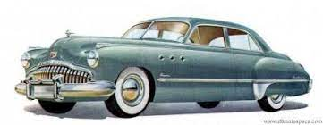

Desde 2010 fazendo a diferença
Desde 2010 fazendo a diferença
Buick Super GM h1>
Este raro veículo de coleção, dispensa qualquer comentário pela apresentação, estado de conservação, originalidade e riqueza dos detalhes de acabamento, com perfeito funcionamento da mecânica e parte elétrica. A lataria, assim como o estofamento, são dignos de louvor. Possui o certificado de originalidade, assim como placa preta. Pertence a um colecionador com altíssimo grau de exigência e com ampla experiência na área de antigos importados. Equipado originalmente com carburador Carter de corpo duplo, sistema elétrico de 6 volts, rádio AM valvulado original, partida automática no acelerador, calefação com ventilação forçada, amperímetro, manômetro do óleo, relógio, tanque de combustível de 72 litros, transmissão automática Dynaflow (PNDLR), freio hidráulico Bendix nas quatro rodas, 5 pneus americanos Firestone novos 8.20 x 15 com banda branca, suspensão independente nas quatro rodas com molas helicoidais, chave original GM americana, manual do proprietário original, macaco original e diversas peças sobressalentes, além de literatura e brochura de propaganda com todos os modelos de Buick de 1951 original da época. Totalmente restaurado nos mínimos detalhes e rigorosamente dentro dos padrões originais de fábrica da época. Possuo cerca de 80 fotos com detalhes, inclusive do processo de restauração.
MARCA/MODELO
GM/Buick
ANO/MODELO
1951/51
MOTOR
4.3 litros - 8 cilindros em linha (original)
POTÊNCIA
125 cv
COMBUSTÍVEL
gasolina
COR
azul mar
VALOR
$320.000.00

calhambeque